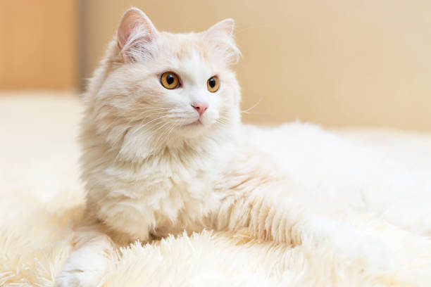

Vindo da Turquia no século XVII, o angorá é conhecido como uma das raças mais antigas do mundo. Além disso, existe uma diferença muito grande entre os angorás e outros gatos: eles gostam muito de brincar na água e de tomar banho. Em países de língua inglesa, seu nome é Angorá Turco.
Apesar de sua proximidade com os humanos, os Angorás surpreendem por serem muito teimosos e espertos. São gatos curiosos, que gostam de explorar o lugar onde estão e o que é possível fazer por ali para colocar a energia para fora. Apesar de serem caseiros e se adaptarem facilmente a lugares pequenos, além de terem sido domesticados há muito tempo, eles ainda preservam seus instintos de caçadores. Eles se dão melhor em lugares com quintais grandes, mas seguros. Outro motivo para a raça angorá ser considerada uma das raças mais inteligentes de gatos é que eles se adaptam muito fácilmente às situações.
Apesar de ser um gato caseiro e viver bem em apartamentos e lugares pequenos, o angorá também é curioso e explorador e dispõe de uma energia muito grande. Por isso, é preciso distraí-lo e comprar brinquedos ou montar peças - como aqueles arranhadores de mais de um andar - para que ele possa escalar e usar toda essa disposição.
O gato angorá é muito dócil e brincalhão. Eles são muito amorosos e alegres e adoram mimos e carinhos, além de serem bastante próximos de seus tutores. Eles se dão muito bem com crianças, mas alguns não se dão muito bem com bebês - é preciso socializá-los corretamente desde filhotinhos. Podem, ainda, se dar bem com outros animais como cachorros se passarem por um processo de familiarização antes.
